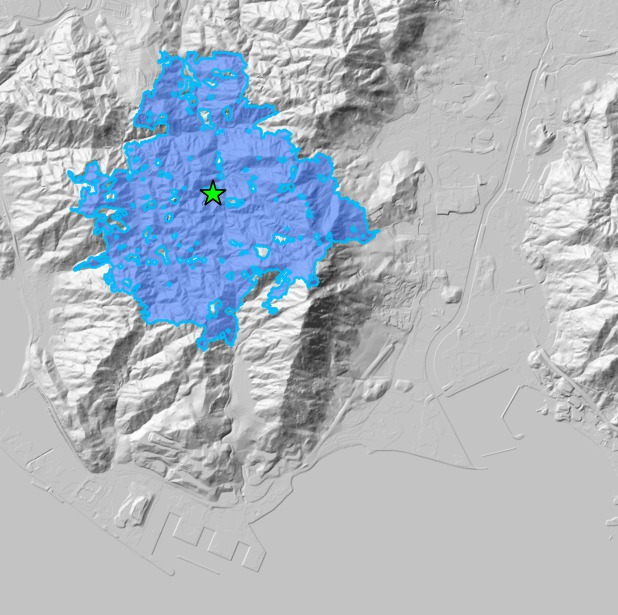
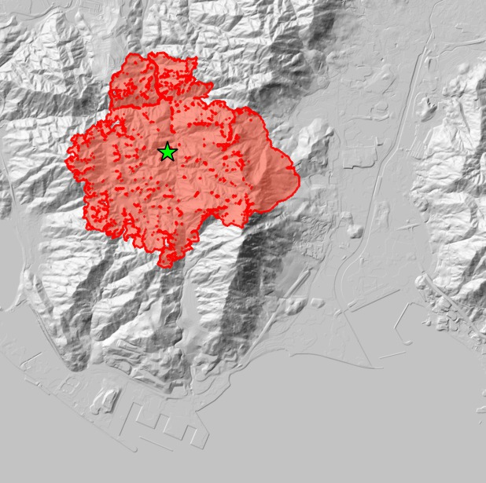
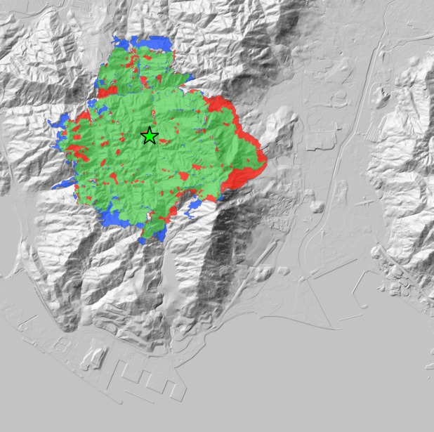
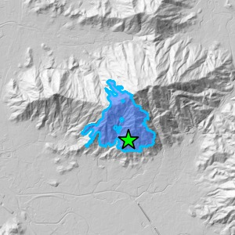
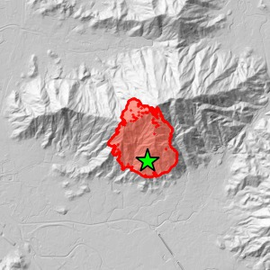
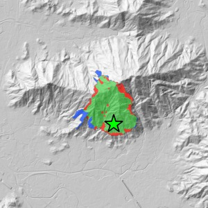
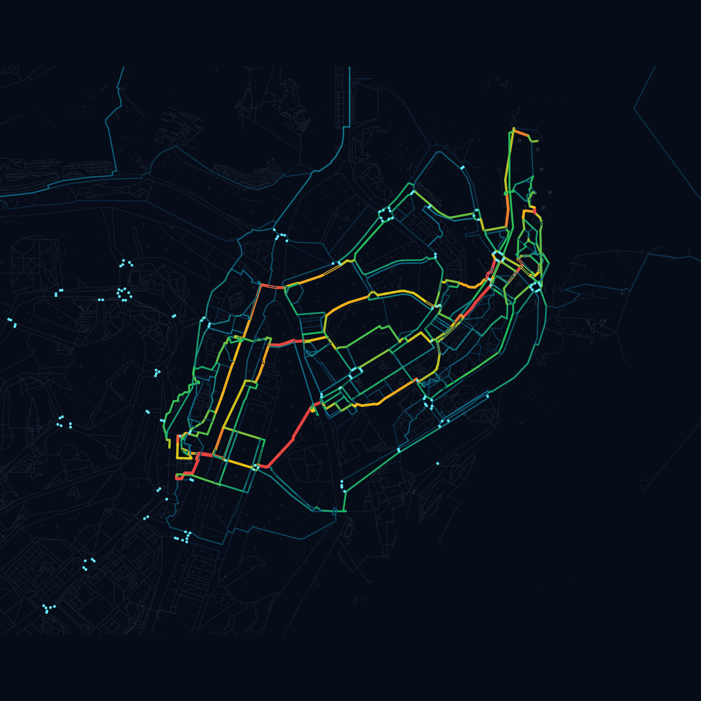
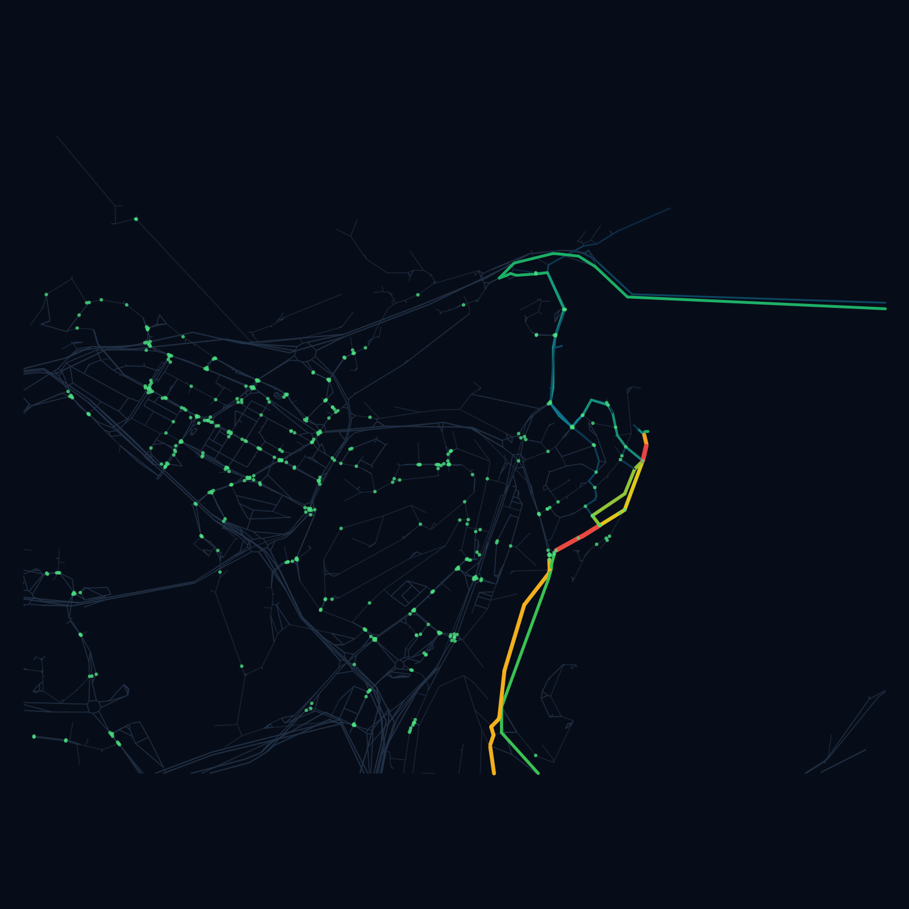

01 · Inputs
Data & exposure
- Terrain, fuel, ERA5 wind
- Buildings & population
- 3DPN, roads, metro
1 Research Centre for Smart Urban Resilience and Firefighting, Department of Building Environment and Energy Engineering, The Hong Kong Polytechnic University, Hong Kong
2 School of Future Cities, University of Science and Technology Beijing, Beijing, China
3 Department of Civil Engineering, Tsinghua University, Beijing, China
4 Department of Urban Management, Kyoto University, Kyoto, Japan
* Corresponding authors.
Traditional wildland–urban interface (WUI) definitions treat evacuation as a road-network problem for low-rise communities. Hong Kong's high-rise buildings and steep terrain instead couple vertical building discharge with horizontal pedestrian–vehicle flows, creating a multi-scale, multi-physics problem that demands modelling effort and expertise; no integrated assessment tool yet exists. WUIEvac is a city-scale reliability framework linking a 10 m Huygens fire model, building T–N discharge, a 3DPN pedestrian network, and a signal-controlled vehicle network. Across six districts and 24 scenarios, it calibrates to 87.1% best SSC on real historical wildfires, achieves 86% evacuation-prediction accuracy, and completes a 7,415-building simulation in 73 s. In the 20 h Tung Chung case, 79.65 ha burns; 55 buildings exceed 100 m yet hold 78.2% of residents; 31,480 residents are warned in three waves; and 13 links remain congested beyond 30 min. Vertical discharge accounts for 65% of the warning-to-clearance time, revealing the distinctive vertical–horizontal coupling of high-rise WUI evacuation and a clear target for pre-event planning and emergency resource allocation.
55-second overview: select a WUI area, simulate fire spread, build the pedestrian and vehicle networks, and inspect congestion and replay for both evacuation layers. The video illustrates the workflow on a demonstration area; the case study below reports a separate Tung Chung scenario.
The same equations drive the fire, vertical discharge, network, coupling, and reliability layers. The framework is deliberately transparent: every quantity below can be traced to the implementation, and model assumptions are treated as sensitivity objects in the paper.
Fig. 2. WUIEvac couples hazard, exposure, response, and management layers to produce evacuation reliability metrics.
T is the fire arrival time, R the rate of spread at bearing θ, and β the slope. The 25° switch follows fire/ros.py; fuel, moisture, wind, and slope enter R.






Fig. 3. Observed vs ρ-constrained simulated burn perimeters for the two calibration fires. SSC = 0.871 for Castle Peak (627 ha observed, 653 ha simulated) and 0.865 for Kai Kung Leng (143 ha observed, 152 ha simulated). ρ is a per-cell rate multiplier inferred from the observed perimeter and smoothed at 100 m.
Db is the cumulative stair release, Ab the occupants arriving at the stair, Qb the stair capacity, and F the Rayleigh departure curve. This is the vertical stage that traditional low-rise WUI models do not resolve.
Se/Re are the Newell–Daganzo link sending/receiving flows; geff is the effective green under a 90 s cycle. The same layer supports normal, pre-emption, coordinated, and flashing modes.


Fig. 4. Final cumulative link use in the LTM layers for a representative district: (a) 3DPN pedestrian network and (b) vehicle road network. Brighter links carry higher evacuation flow; signal layers are marked in cyan and green. Colour is normalized within each network.
th is the earliest fire arrival within the exposure distance; tw is the SSUG warning time. After th(e), a threatened link receives an avoidance penalty in routing while its capacity remains unchanged.
R(t*) is the probability that a warning-wave T90 meets a target; Mi is the time margin between fire arrival and evacuation; c is the compliance factor (1.0 in the demo, 0.46 in the field-informed bound).
Fire calibration. Satellite-derived dNBR perimeters from the 2021 Castle Peak and 2017 Kai Kung Leng fires are compared with simulations under the ρ-constrained calibration; shape similarity reaches SSC = 0.871 and 0.865, with a best of 87.1%.
Evacuation accuracy. On eight held-out WUI scenarios, LTM T90 is compared with a high-fidelity agent-based building-plus-road benchmark and cross-checked by expert AHP–FCE review; Ae = 86%.
The 20 h Tung Chung fire burned 79.65 ha and produced 421 WUI contact cells. The fire front activated three SSUG zones in sequence between 2.6 and 11.1 h, rather than evacuating the entire district at once. The district's 747 buildings house 78,576 residents; only 55 buildings exceed 100 m, yet they hold 78.2% of residents, so vertical discharge is the mandatory first phase for most of the population. Vertical release has a median of 36 min and a 90th percentile of 68 min, and across the three warning waves it accounts for about 65% of the warning-to-clearance time—making the vertical layer, not the road network, the dominant early-phase constraint. Fire-front activation warns 31,480 residents in three waves; 47,096 remain outside the activation zones, and 13 links (11 pedestrian, 2 vehicle) stay congested for more than 30 min. The case shows that high-rise WUI evacuation is governed by a vertical-to-horizontal handover: warning timing, stair discharge, and the first receiving links matter more than road-network capacity alone.